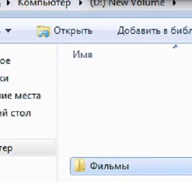
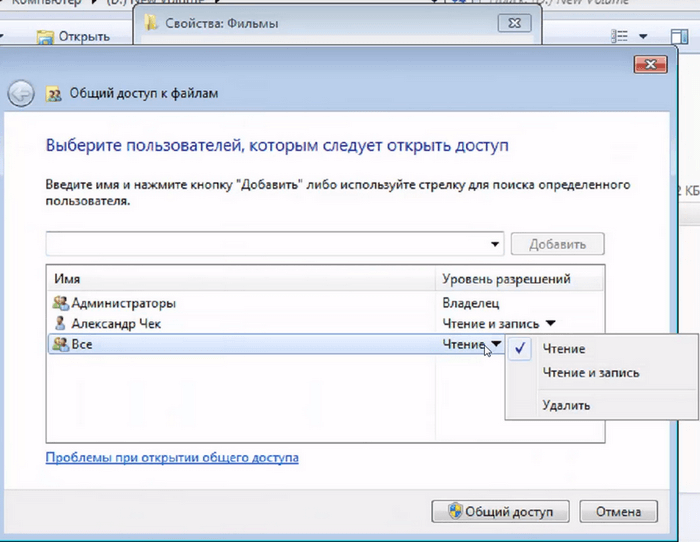
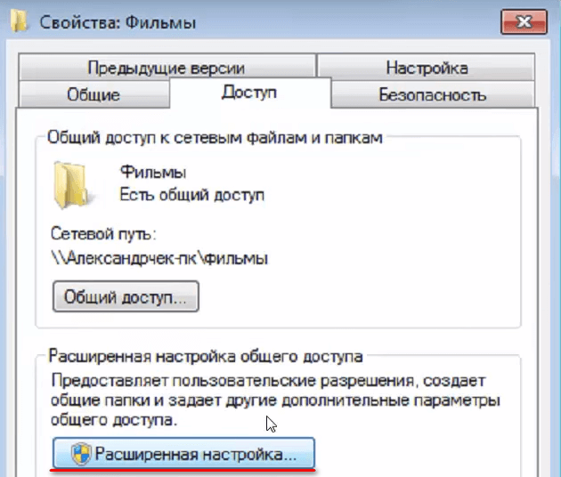
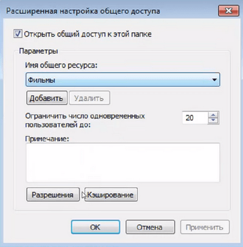
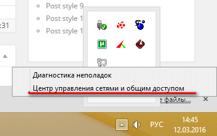
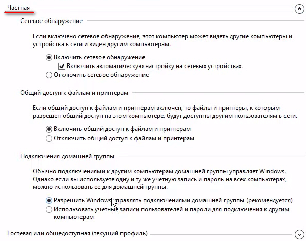
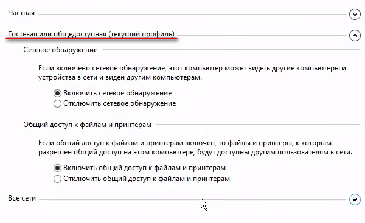
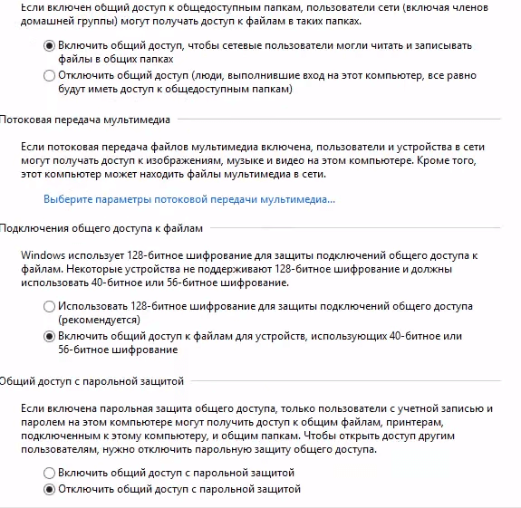
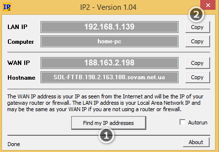

Как открыть общий доступ в Windows (видео)
Как открыть общий доступ в Windows Xp/7/8/10 и подключить сетевой диск
12.03.2016 /
Общий доступ в Windows — это очень удобное решение, если у вас дома несколько компьютеров и планшетов, телефонов. Удобно это тем, что вы можете загружать всё на один компьютер, открыть там общий доступ и заходить с разных устройств на него по сети. Таким способом удобно передавать фильмы, музыку, документы и др. Данный способ подходит для всех операционных систем Windows, начиная с версии XP
Для начала, вам надо создать папку на любом из своих дисков и дать ей общий доступ.
Шаг №2. Даём папке доступ для всех
Шаг №3. Расширенная настройка общего доступа
Шаг №4. Настройка общего доступа в центре управления сетями и общим доступом
Шаг №5. Узнаём сетевой адрес компьютера.
Шаг №6. Проверяем общий доступ с другого компьютера
Шаг №7. Общий доступ между телефоном (планшетом) Android и вашим ПК
Как открыть общий доступ в Windows (видео)
Для создания общей папки, создайте любую папку на диске C или D. В примере, я создам папку Фильмы и дам ей общий доступ

Создаём папку Фильмы (Как открыть общий доступ в Windows Xp/7/8/10 и подключить сетевой диск)
Шаг №2. Даём папке доступ для всех
Для того, чтобы дать папке общий доступ, нажмите правой клавишей по папке, выберите Свойства — Доступ — Общий доступ — Из списка выбираем Все и добавляем. Если надо сделать так, чтобы с диска можно было только читать (но не добавлять новые файлы) тогда выбираем где Чтение и запись — Чтение
Свойства — Доступ — Общий доступ
Шаг №3. Расширенная настройка общего доступа
Теперь ставим галочку Открыть этой папке общий доступ. Для этого нажмите во вкладке Доступ, Расширенные настройки, поставьте галочку (Открыть этой папке общий доступ) и нажмите ОК.

Доступ — Расширенные настройки

Открыть этой папке общий доступ
Шаг №4. Настройка общего доступа в центре управления сетями и общим доступом
Переходим в Центр управления сетями общим доступом. Для этого наймите правой клавишей по сетевому подключению и выберите Центр управления сетями и общим доступом.

Центр управления сетями и общим доступом
Выставьте в настройках общей, гостевой и домашней сети как на скриншотах ниже



Шаг №5. Узнаём сетевой адрес компьютера.
Для того, чтобы узнать сетевой адрес компьютера, скачайте и запустите программу Ip2 (самый быстрый способ узнать ip)
Теперь запустите её и нажмите Find My Ip Addresses, после чего скопируйте сетевой адрес нажав на Copy

После того, как мы открыли общий доступ и знаем Ip компьютера, можем уже зайти на общую папку
Шаг №6. Проверяем общий доступ с другого компьютера
Для этого, откройте любую папку (на другом ПК или ноутбуке) и сверху вбейте два слэша и ip адрес, который мы узнавали в 5-ом шаге.
Пример: \192.168.1.139
Отлично! Наш общий доступ почти настроен. Для удобности можем создать сетевой диск, чтобы наш общий диск было видно в общих дисках.
Для этого откройте Мой компьютер (Этот компьютер) — Подключить сетевой диск — и вставляем путь к папке. Я открывал доступ к папке фильмы, поэтому мой путь выглядит так \192.168.1.139фильмы